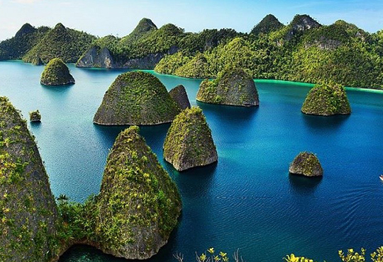
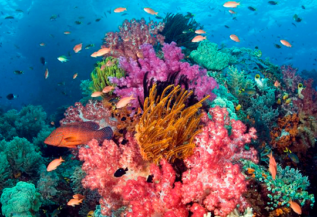
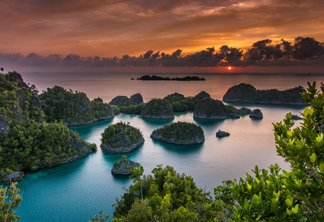

Raja Ampat is one of the world’s last wild places. A vast sprawl of tropical island jewels amid seas renowned as being the richest on our planet.
A nursery and refuge for coral and fish species that are rapidly disappearing from elsewhere in the region, and the perfect place to really get away from it all.
Situated off the northwest tip of Bird’s Head Peninsula on Papua, the most eastern island of the Indonesian Archipelago, Raja Ampat or literally meaning ‘The Four Kings’
is an archipelago comprising over 1,500 small islands, cays, and shoals surrounding the four main islands of Waigeo, Piaynemo, Salawati, and Misool.
Staying in Raja Ampat accommodation that is owned and operated by local people provides a unique cultural experience at an affordable price.
It really is the best way to enjoy Raja Ampat. You’ll be supporting the local economy and empowering the traditional owners of Raja Ampat in their efforts to preserve both
their environment and their way of life. Salawati isn’t exactly the prima-donna of the Raja Ampat archipelago, but the island has some unmissable attractions for nature
lovers and history buffs. Hidden inside the dense sago forest are old WWII bunkers standing intact as if untouched by time.
Endemic creatures like the famed Papuan rainbowfish can also be spotted playing around the corals that hem this island.

This string of islets has become the representative view of Raja Ampat’s beauty. It summarises some of the natural vistas you’ll encounter above the surface,
which include gorgeous limestone formations mantled in greens jutting out the brilliant turquoise waters. The Pianemo viewpoint presents a sprawling view of the archipelago,
a scene you will never get tired of admiring.
This island is located on the far-flung southern side of the Raja Ampat archipelago, adjoining the vast and thriving Seram Sea of the Moluccas.
That location puts Misool on a migratory route for big marine creatures, such as whales. Above the surface, turquoise water, gorgeous limestone and mangrove
forests abound as far as the eye can see. Misool also has ancient caves to explore in the area, alongside luxury resorts (if that’s to your taste).

Get here
There are many modes of transport to help you get around in Bali. A variety of excellent half day, full day and overnight tour packages are available from your hotel
desk or any of the numerous travel agents and tour operators which abound in Bali. You can also find a car and driver who will also be your guide. Tell the driver your desired
route and negotiate a fee.
An important virtue to have while on the road in Bali is patience! Although the road system in the heavily populated areas is quite reasonable (condition wise),
it can also be heavily congested at peak periods. Ceremonial processions often take up the entire road so if you're caught behind a procession, enjoy the colorful experience.
Get around
By Air
The gateway to enter Bali by a flight route is through the Ngurah Rai International Airport. International and national flights are available around the clock, to take
the visitor to the Island of The Gods.
The airport is scheduled to close once a year during the Balinese Nyepi ceremony, for 24 hours. At Nyepi, every corner of Bali is performing the sacred rituals which
made the island ceased any activities outside of these rituals for one whole day.
Overland
Public transport to Bali is available through travel companies and busses. If you opt to experience a road trip, be sure that you are equipped and ready for the long hours.
From the capital of Jakarta, an overland road trip to Bali can range from 30 hours to a few days. All depending on whether or not you want to stop by and enjoy the cities that you are going to pass through.
By Sea
Bali is accessible by ferry ride from an island of Lombok in West Nusa Tenggara. In Lombok, you can explore the beauty of Mount Rinjani and pristine beaches on the Gili islands.
From Java Island, you can get to Bali by taking a ferry from Banyuwangi. The city with the slogan of The Sunrise of Java is where you can embark to experience the adventurous path to Ijen Crater and its mesmerizing Blue Fire